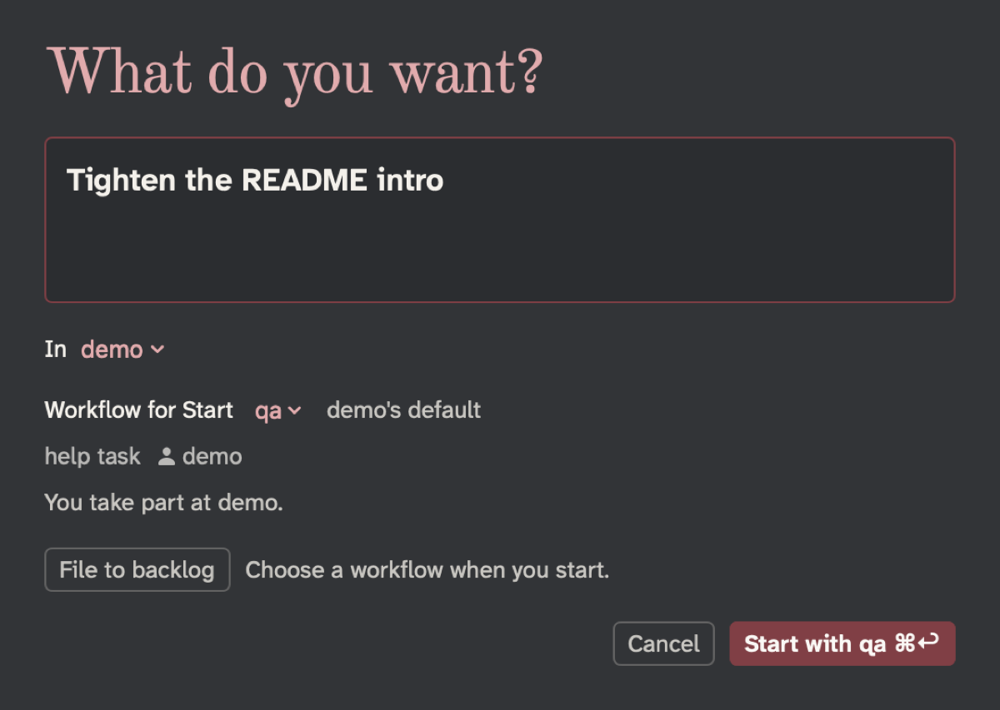
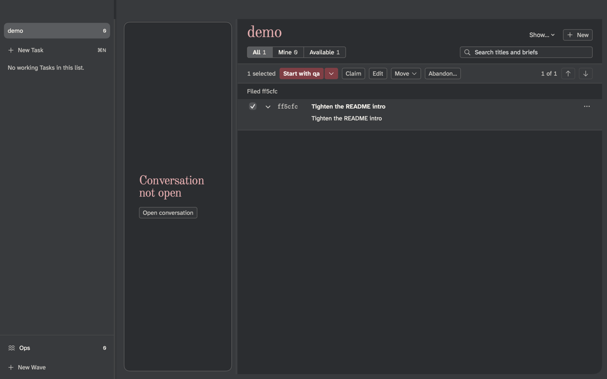
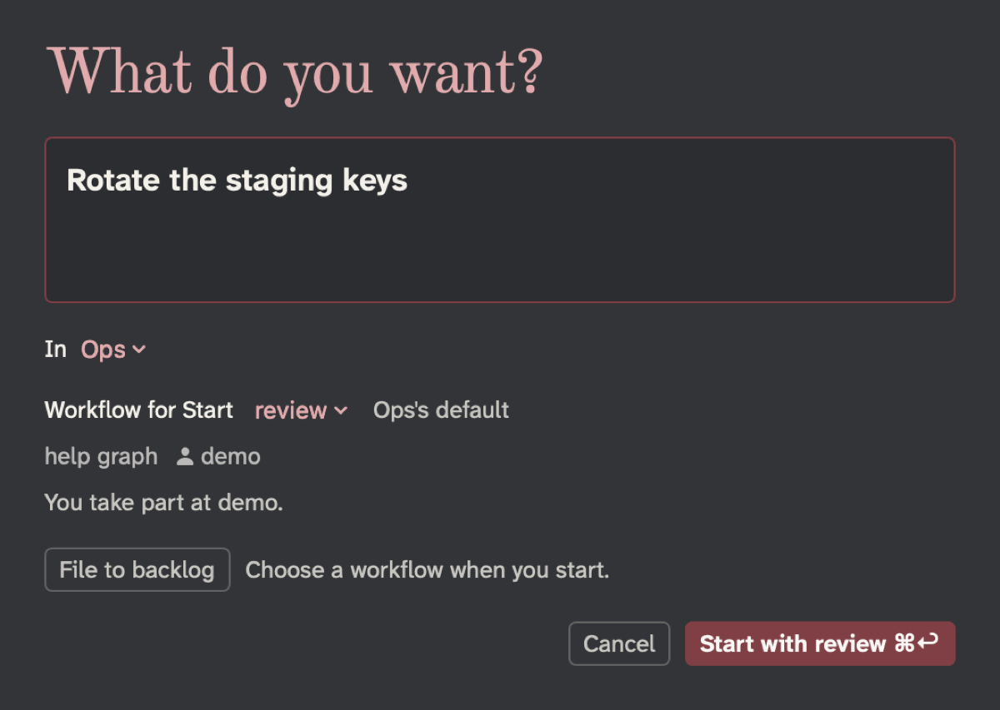
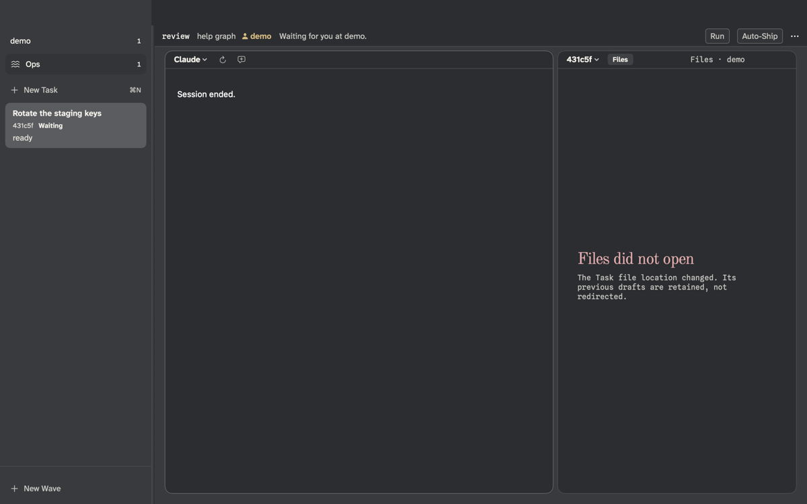
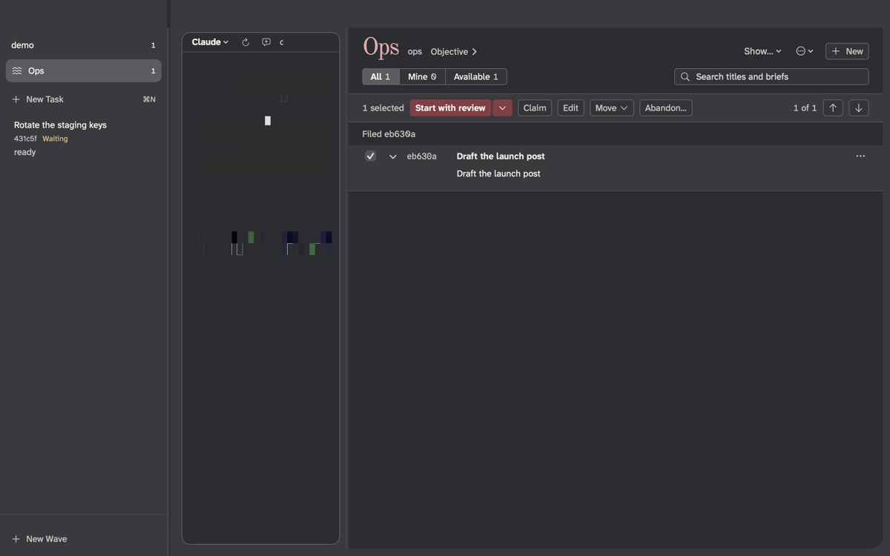
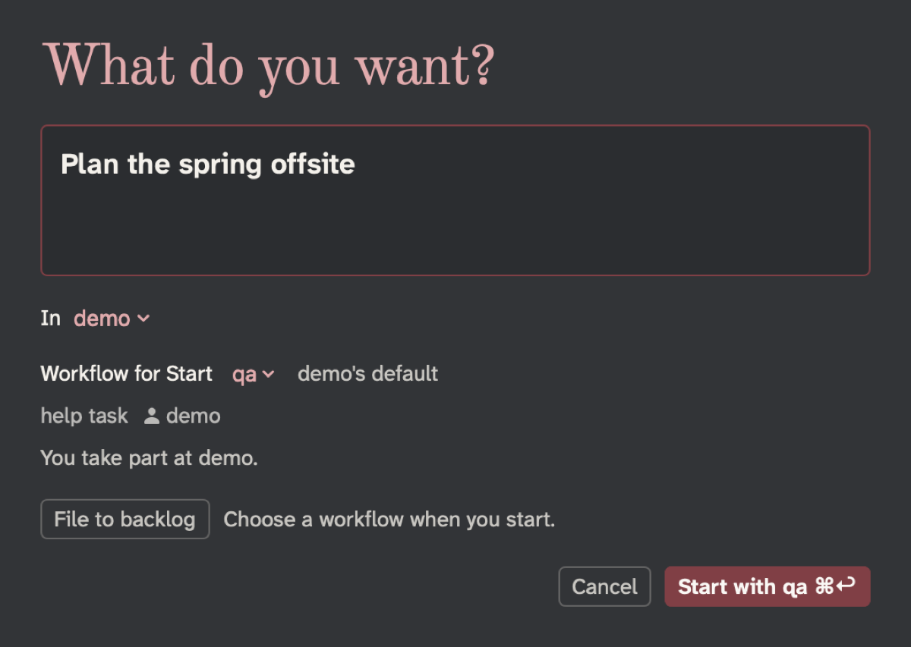
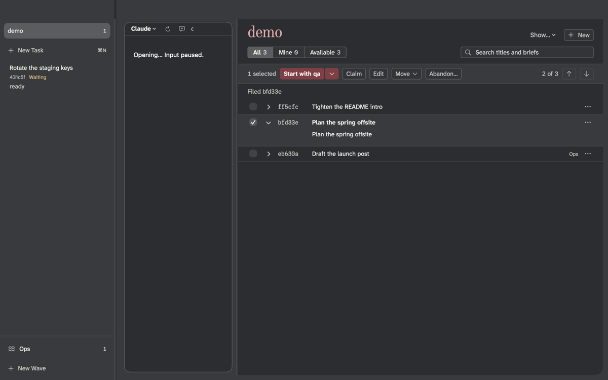
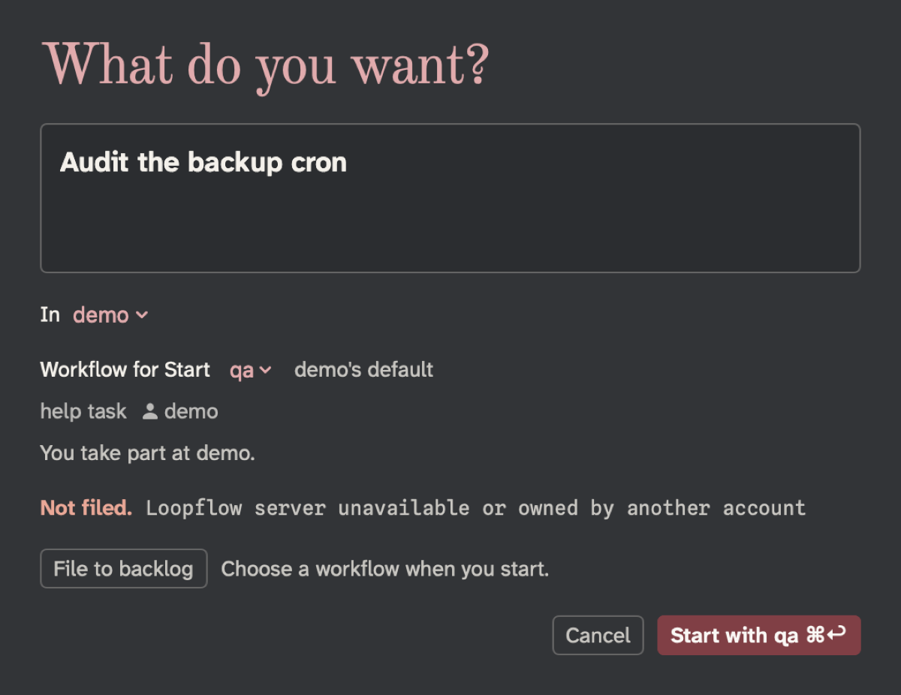
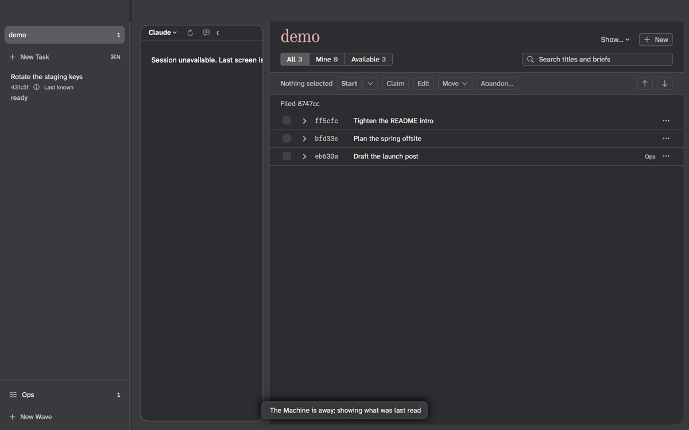
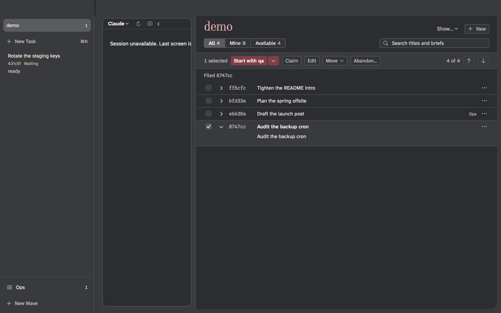

An isolated Dev bundle (com.loopflow.mac.qa1065.dev) built from this branch, running on a private Machine
(/tmp/q1065: own HOME, LF_HOME, branch lf server run, stand-in claude). The repository
demo has the default Graph qa, and its Wave Ops takes review. I drove the app through
.lf/qa/QAHook.swift: synthesized clicks, text inserted into the sheet's field, ⌘↩ and Esc as key equivalents.
Captures come from cacheDisplay. Every Task listed below was checked against lf task list / lf task status.
New Task over an empty repository backlog. The sheet offers Start with qa ⌘↩ with "demo's default", and File to backlog sits on its own line.

Clicking File closed the sheet. The backlog then showed "Filed ff5cfc" with the row selected and its brief open. lf task list shows
ff5cfc · — · (unstarted, no workflow pinned), and the saved submission under desktop-cache/submissions was retired.

With Ops selected, the sheet opened "In Ops" and read Start with review ⌘↩, "Ops's default", with the review steps (help graph, you at demo).

⌘↩ started it: 431c5f has a worktree and branch, and its status reads "Graph review: Waiting for you at demo." The Task page opened with the review bar.

Unrelated to this change: the Files pane read "Files did not open: The Task file location changed". desktop.md already records this for the window a Task is started in (Task ea8659).
From Ops, File put eb630a in Ops's backlog. The row was selected under "Filed eb630a" and the toolbar offered "Start with review".

I opened the sheet in Wave Later, then ran lf wave remove later. The sheet's In switched to demo on its own, and the Start line
switched to qa. File then filed bfd33e in the repository, revealed it and selected it. No refusal arrives, because the label changes
before the press.


I killed the private server and pressed File. The sheet stayed open with the words kept, showing "Not filed. Loopflow server unavailable or owned by another account".
Nothing was saved to submissions.

After restarting the server I pressed File again. The sheet closed and the notice read "Filed 8747cc" while the app still said "The Machine is away; showing what was last read". The new row was missing and the backlog read "Nothing selected".

About 30 s later the app reconnected. 8747cc appeared selected with its brief open, and the saved submission was retired.

No product bugs found. QAHook.swift gained insert and key, because type cannot reach a sheet that is not key.
desktop.md now records the New Task coordinates, how to find the private server's PID, and the zsh kill $PIDS trap.
Menu, which the hook can't open. Only the inherited
default was driven live. The headless suite covers named workflows and Use default (plan.md).CreationSubmissionTests.task_create_answers…across_a_server_restart covers it.cacheDisplay and synthesized events.